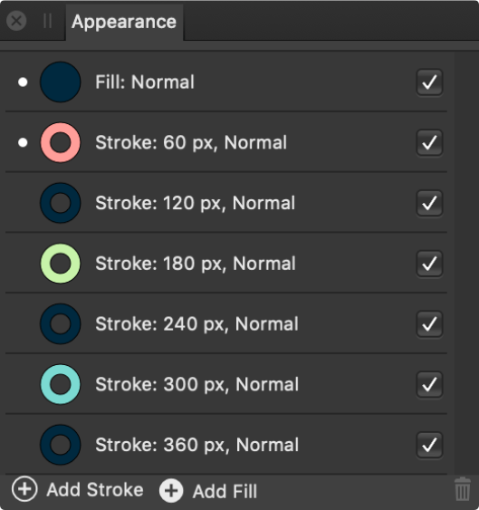

The Appearance panel allows you to apply multiple strokes and/or fills to any selected object. With drag-and-drop ordering and control of stroke widths and per stroke/fill blending, you can achieve striking creative effects.

The Appearance panel.
From the Appearance panel you can:
Manage strokes and fills for the selected object
Apply additional strokes and fills to the selected object
Hide or show strokes and fills
Set the active stroke and fill which can then be edited via the Stroke and Color panels
Apply independent blending control of strokes or fills instead of for the object
Delete strokes and fills
The panel displays the following:
Stroke—the stroke entry showing the stroke color, width and blend mode. The active stroke will be denoted by a white dot to the left of its entry. This is the stroke that will be affected by Stroke panel editing.
Fill—the fill entry showing the fill color and blend mode. The active fill will be denoted by a white dot to the left of its entry. This is the fill that will be affected by Color panel editing.
Add Stroke—creates a new active stroke above the current active stroke.
Add Fill—creates a new active fill above the current active fill.
Remove—deletes the currently selected stroke or fill.